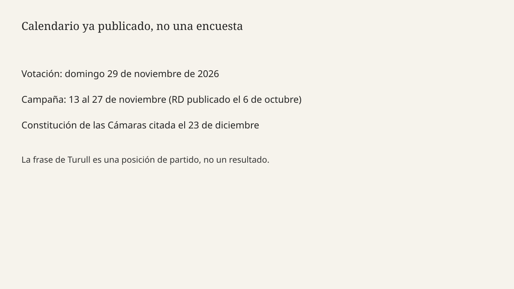

Barcelona · elecciones · 7 de octubre de 2026
Jordi Turull dijo que Junts no investirá a Pedro Sánchez: «hemos salido escaldados».
_01.jpg)
Lo que coincide entre redacciones
El miércoles 7 de octubre de 2026, el secretario general de Junts, Jordi Turull, dijo en una entrevista en TV3 que su partido no volverá a investir a Pedro Sánchez después de las elecciones generales del 29 de noviembre. EFE, recogida por Infobae, cita la frase: «A Pedro Sánchez no le investiremos. Hemos salido escaldados». Europa Press, recogida por Telemadrid, trae una variante casi idéntica: «Nosotros a Pedro Sánchez no le investiremos porque hemos salido escaldados de esta persona, pero muy escaldados». Las dos agencias sitúan la entrevista el miércoles y el nombre del programa en TV3. No hace falta elegir un adjetivo de campaña para registrar el acto: es una negativa de investidura anunciada por el secretario general del partido que sostuvo la legislatura.
El calendario al que se refiere ya no es un anuncio de rueda de prensa. El martes 6 de octubre el Boletín Oficial del Estado publicó el real decreto de disolución de las Cortes elegidas el 23 de julio de 2023 y la convocatoria para el domingo 29 de noviembre. EFE fijó la campaña de las 00:00 del viernes 13 de noviembre a las 24:00 del viernes 27 de noviembre, y las sesiones constitutivas el 23 de diciembre. La frase de Turull no mueve esas fechas. Las fechas sí explican por qué la frase importa esta semana y no dentro de ocho meses.
EFE añade que el martes la portavoz de Junts en el Congreso, Míriam Nogueras, descartó «absolutamente» pactar con un eventual Gobierno de PP y Vox. Esa segunda negativa no es la misma frase que la de Turull. Una cierra la investidura de Sánchez. La otra cierra, en boca de la portavoz, un acuerdo con el otro bloque. Juntas describen una posición de partido a 7 de octubre. No describen el hemiciclo que salga de las urnas.
Lo que es solo una cita
Turull dijo que Sánchez «no ha cumplido» los compromisos con Junts y que ha puesto «excusas». Europa Press le atribuye el recuerdo del acuerdo de Bruselas y la petición, antes de la convocatoria, de que el PSOE propusiera otro candidato. También la frase: «Este señor no ha cumplido. Y como no ha cumplido, nosotros le pedimos que se sometiera a una cuestión de confianza y se hizo el loco». Son juicios de un negociador sobre el cumplimiento de un pacto. No son un inventario publicado, artículo por artículo, en las piezas que se puntúan abajo.
La misma entrevista admite un cumplimiento y lo acota. Europa Press escribe que Turull constata que Sánchez sí cumplió la ley de amnistía, y que ese compromiso era a cambio de una investidura y no de una legislatura: «A partir de aquí, todo el resto de cosas, todo han sido excusas». Quien lea solo «no ha cumplido» se deja fuera la excepción que el propio entrevistado marca. Quien lea solo la amnistía se deja fuera el resto del reproche. Las dos citas caben en el mismo turno.
Sobre Carles Puigdemont, EFE dice que Turull no entra en la «especulación» y no concreta si el líder de Junts podría volver a Cataluña antes de fin de año, ahora que el Supremo ha levantado la orden de detención. La prioridad que enuncia es que el retorno sea «coherente» con la idea de que Puigdemont vuelve como «el presidente del país» tras nueve años en Bélgica. Eso es un deseo de encuadre. No es una fecha de vuelo ni una resolución nueva del Supremo fechada el miércoles en estas notas.
El mecanismo que hace falta
En el sistema español, disolver las Cortes no elige presidente. Elige un Congreso. Después, el rey propone un candidato y el Congreso vota la investidura. Junts no ganó la mayoría en 2023; sus votos fueron una pieza de la mayoría que invistió a Sánchez. Decir hoy que esos votos no se repetirán es información sobre una pieza, no sobre el resultado del 29 de noviembre. Si el PSOE queda lejos de 176 escaños, la frase cierra una vía. Si otra aritmética aparece, la frase no obliga a los diputados que aún no han sido elegidos. Un secretario general puede comprometer la dirección. No puede comprometer una papeleta que no se ha impreso como escaño.
La Diputación Permanente sigue existiendo entre la disolución y la constitución de las nuevas Cámaras. Los decretos de vivienda aprobados de nuevo el martes por el Consejo de Ministros apuntan a ese órgano, no a un pleno que ya no se reúne con la legislatura disuelta. La entrevista de Turull no es la votación de esos decretos. Mezclarlas convierte una negativa de investidura en un veto ya contado. El dossier del martes separó el real decreto 806/2026 de la segunda aprobación de vivienda. Este texto no los vuelve a fundir.
Lo que la pieza no es
No es una encuesta. No es la dimisión de Sánchez. No es un pacto firmado con el PP. No es la confirmación de que Puigdemont pisa Cataluña en una fecha. No es una sentencia sobre si el acuerdo de Bruselas se cumplió: es la versión de una de las partes, con una excepción explícita sobre la amnistía. La fachada del Congreso es un exterior de archivo, no el plató donde se dijo la frase.

Qué faltaría para subir la certeza
Un corte con la pregunta completa, o el acuerdo de Bruselas cotejado punto por punto con hechos fechados, permitiría separar excusa de incumplimiento. Hasta ese cotejo, la noticia del miércoles es la negativa de investidura y la excepción de la amnistía, no el veredicto sobre la legislatura.
Artículos fuente y puntuaciones
| Medio | Titular | T | N | C |
|---|---|---|---|---|
| EFE / Infobae | Turull (Junts): "A Pedro Sánchez no le investiremos. Hemos salido escaldados" | 93 | 0 | 96 |
| Europa Press / Telemadrid | Turull (Junts) asegura que no investirán a Sánchez: "hemos salido escaldados" | 91 | -2 | 94 |
| El Periódico | Última hora de las elecciones generales, en directo | Junts dice que no volverá a investir a Pedro Sánchez: "Hemos salido escaldados" | 84 | -6 | 80 |